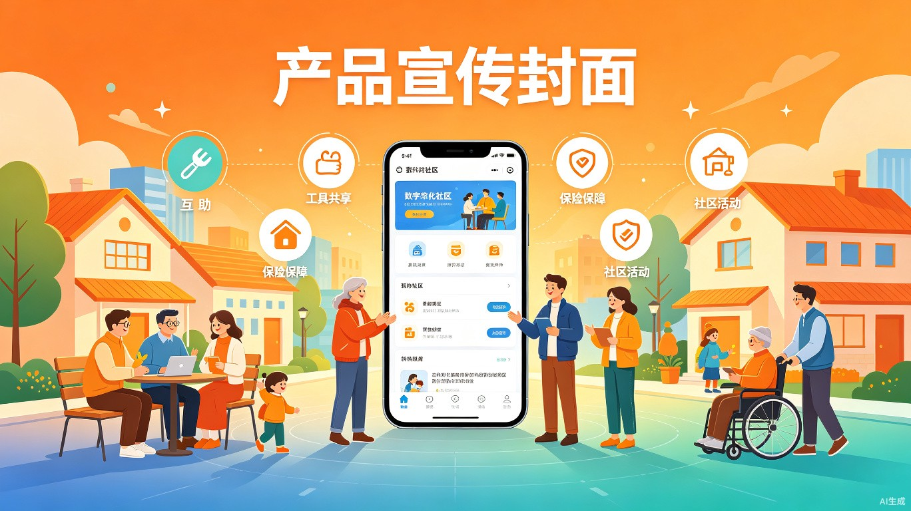
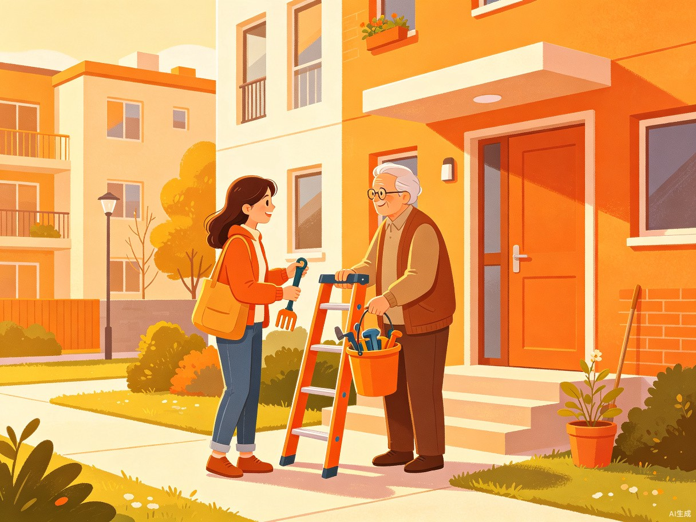

AI驱动的社区互助与普惠保障服务平台
以"物"为媒，重塑邻里温情；以AI为翼，赋能普惠保障。
打造一个共建共治共享的数字化社区生态，让每一份善意都有回响。
从"远亲不如近邻"的传统价值出发，用技术搭建一个既有温度又有深度的社区连接器
旨在解决现代社区居民生活中的三大痛点：一是邻里间缺乏低门槛的互动契机，导致社区"原子化"；二是普通民众对政府普惠性政策（如惠民保）存在认知盲区，未能充分享受政策红利；三是缺乏一个权威、便捷的本地化生活常识获取与社区活动参与渠道。
灵感来源于对"远亲不如近邻"传统价值的重构思考。我们发现，大家其实都有互助的意愿，但缺乏一个安全的破冰渠道；同时，政府指导的惠民政策初衷极好，但受限于信息传播渠道，部分居民对其了解不够全面，导致好政策未能完全发挥兜底作用。
"拼好事"是一个微信小程序+APP的社区服务聚合平台。它以"低门槛的物品互助"为切入点，通过AI智能匹配供需，逐步建立社区信任网络；进而带动"普惠保险咨询"、"本地活动聚合"与"生活常识科普"，打造数字化社区生态。
精准定位社区多元角色，覆盖从活跃供给到核心需求的全谱系用户
社区互助的主要供给方，时间灵活，乐于分享
热心志愿者，拥有丰富生活经验和闲暇时间
忙碌、有临时协助需求，是互助的核心需求方
需要陪伴与协助，社区关怀的重点对象
临时借用梯子、电钻、打气筒等工具，社交压力小，极易促成邻里第一次互动
临时帮忙收快递、喂猫遛狗、老人就医陪同等高信任度互助
了解惠民保是否值得买，如何为父母配置基础医疗保障
寻找公益讲座、亲子活动、便民服务日等社区活动
邻里之间缺乏自然互动的契机，传统的业主群信息杂乱，陌生人之间不敢轻易麻烦别人
政府指导的惠民保条款专业性强，部分居民对其"四不限"及大病高报销优势了解不够全面
实用的生活常识与本地化社区活动信息分散，缺乏权威且易懂的聚合查询入口
以技术为桥梁，连接人与人、人与政策、人与社区

通过"借工具"等低门槛的互助行为，打破钢筋水泥的隔阂，让陌生人自然破冰，逐步重建熟人社会的信任网络，让社区治理更有温度。
大力推广政府指导的普惠型保险，利用AI降低理解门槛，向居民清晰传递其"四不限"及"大病高报销"的核心优势，防止家庭因大病返贫。
通过聚合本地活动与常识科普，为居民提供丰富的线下互动契机，增强社区凝聚力，提升居民的公共秩序感和健康意识。
AI赋能三大核心场景，让社区服务更智能、更高效、更普惠
相比传统社群喊话，AI 能根据用户的自然语言描述（如"借个梯子"），自动生成规范的求助帖子，并根据地理位置、物品标签精准匹配最合适的邻居，大幅提升求助与响应效率，极大降低发布与沟通门槛。
AI 顾问可将晦涩的政策条款转化为通俗易懂的"大白话"。通过智能问答与条件测算，秒级为用户匹配最适合的保障方案，精准传递"有社保即可买、大病报销比例高"的核心优势，大幅降低居民的理解与决策成本。
AI 能够根据用户的地理位置、年龄标签及历史参与偏好，进行周边活动的智能聚合与个性化推送。将原本需要用户主动搜索的"人找信息"模式，升级为"信息找人"的精准分发，降低居民参与社区公共生活的门槛。
三大核心场景的深度智能化改造
用户只需用自然语言描述需求（如"明天上午需要借个梯子换灯泡"），AI 即可自动生成包含时间、地点、物品描述的规范化求助帖，并基于地理位置、物品标签、用户信用分等多维度数据，精准匹配最合适的邻居。
针对惠民保条款专业性强、理解门槛高的问题，AI 顾问通过多轮对话了解用户家庭状况，将复杂的保险条款转化为"大白话"解读。用户可以随时询问"给父母买合适吗""已经生病了能买吗"等问题，获得即时、准确的个性化解答。
AI 持续聚合社区周边的公益活动、亲子互动、健康讲座、便民服务日等信息，根据用户的年龄、家庭结构、历史参与记录，进行千人千面的个性化推荐。让每位居民都能第一时间发现感兴趣的社区活动。
我们相信，技术不应该让人与人之间的距离更远，而应该成为连接彼此的桥梁。
"拼好事"致力于用AI的力量，让每一位居民都能轻松获得邻里互助的温暖、普惠保障的安全感，以及社区参与归属感。
让每一份善意都有回响，让每一个社区都充满温度。